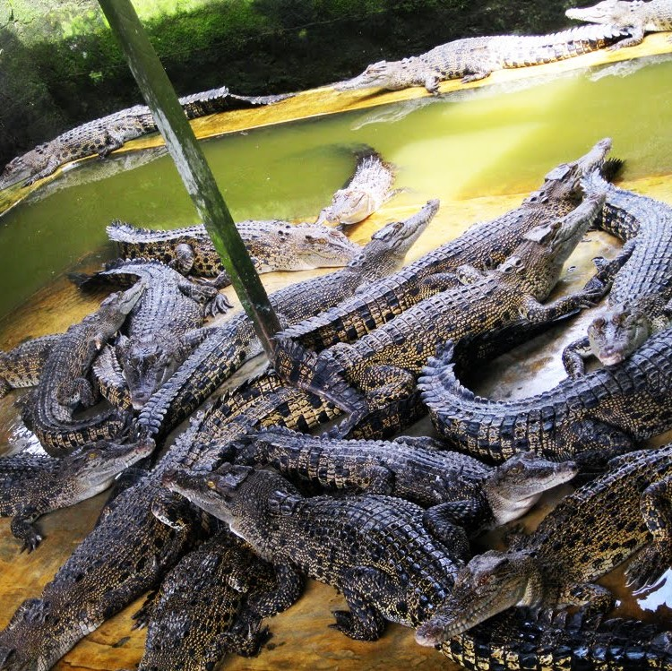
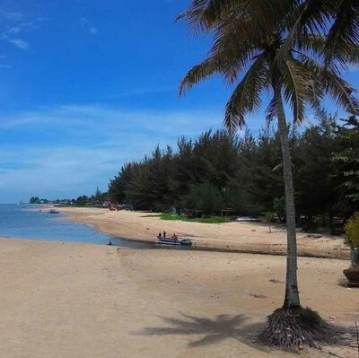
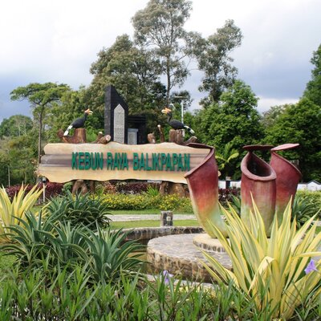
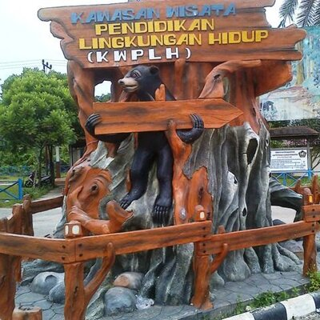
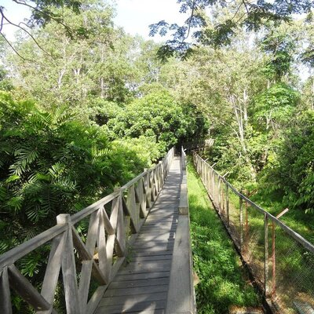
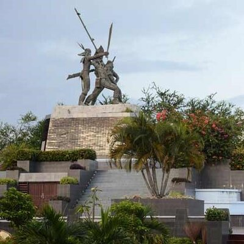

TOURISM
Beach? Garden? Jungle? Even crocodiles? We have it all!

In this location, crocodiles are deliberately cultivated to be used for almost
all parts of it. Here the crocodiles developed are estuarine, supit, and freshwater
crocodiles. Besides seeing crocodiles up close, visitors can also see the activities of
other animals, elephants.
Address: Teritip, East Balikpapan, Balikpapan City, East Kalimantan
76118.
Penangkaran Buaya

Manggar Beach
The beach with an area of 13,000 m2 with clear sea water, small waves and white
sand, is a comfortable place for those who want to play, sail or beach volleyball. The sand
is a bit white and there are pine trees on the edge. Around the beach there are also many
rental buoys of various shapes and colors. The trees around the beach also give the
impression of being shady and cool.
Address: Jl. Pantai Manggar Segarasari Manggar, Manggar Baru, East
Balikpapan, 76116.

Kebun Raya Balikpapan
Kalimantan forests that are increasingly damaged day by day are a threat to flora and
fauna, including humans. Efforts are being made to keep the tropical forests on this island
from getting worse. The Balikpapan Botanical Garden was established which aims for tourism
objects, nature conservation, conservation education and research, and the preservation of
the native flora of Kalimantan which is almost extinct.
Address: Jl. Soekarno Hatta Km. 15, Karang Joang, North Balikpapan,
76127.

KWPLH
Kawasan Wisata Pendidikan Lingkungan Hidup (KWPLH), which translates to Environmental
Education and Recreation facility, or colloquially also known as the Sun Bear Center, is the
ONLY environmental education facility in Indonesian Borneo. This place also known as The Sun
Bear Education & Conservation Center.
Address: Jl. Soekarno Hatta Km. 23, No. 185 RT. 42, Karang Joang,
North Balikpapan.

Wain River
HLSW (Hutan Lindung Sungai Wain) is a combination of forest and river tourism objects. The
total area of the HLSW area is 10,025 hectares and is traversed by the Wain River which is
18,300 m long with clear water with mangroves and habitat for birds, fish, crabs and forest
people.
Address: Karang Joang, Balikpapan Utara, Balikpapan City, East
Kalimantan 76127.

Monpera
Monumen Perjuangan Rakyat (Monpera) is a memorial monument to commemorate a historical
event in Balikpapan City, East Kalimantan Province. The first monument was a statue of a
Dayak warrior (made of ironwood) holding a flag in front of a tilapia fish pond in 1983.
Later the statue was renovated into a bronze statue with three figures in the statue who
were excited to erect a flagpole.
Address: Jl. Jenderal Sudirman No.1, RW.RT.11, Klandasan Ulu,
Balikpapan City.